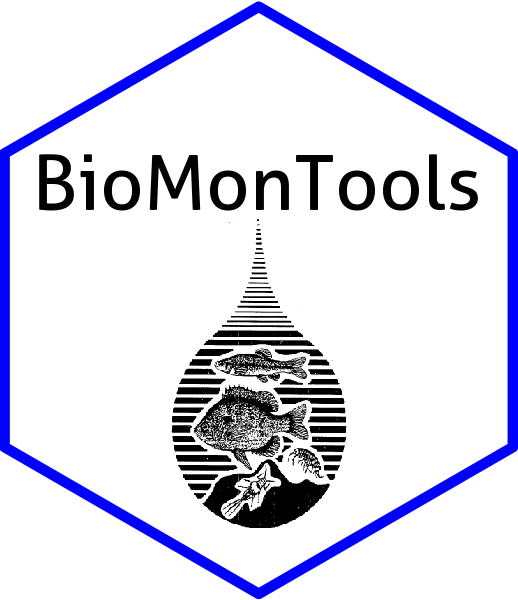

BioMonTools 
Functions to aid the data analysis of bioassessment and biomonitoring data. Suite of functions and tools for metric calculation and scoring for mult-metric indices and related data manipulation.


Installation
To install the current version use the code below to install from GitHub. The use of “force = TRUE” ensures the package is installed even if already present. If the package remotes is missing the code below will install it.
if(!require(remotes)){install.packages("remotes")} #install if needed
install_github("leppott/BioMonTools", force=TRUE)Vignettes are not installed by default. If you want the additional documentation (recommended) then use this version of the code.
if(!require(remotes)){install.packages("remotes")} #install if needed
install_github("leppott/BioMonTools", force=TRUE, build_vignettes=TRUE)